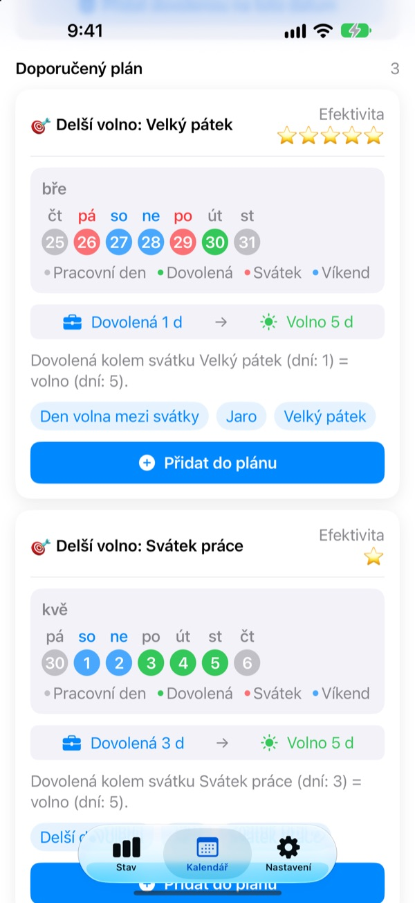
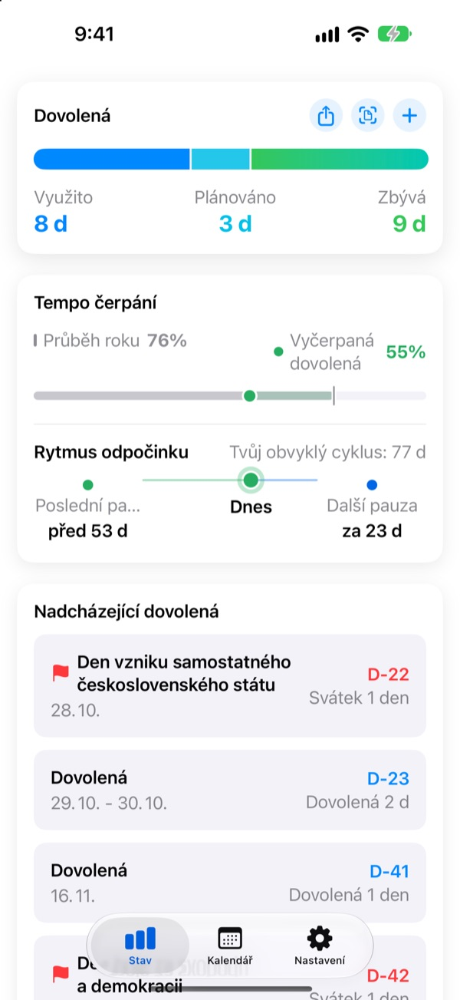
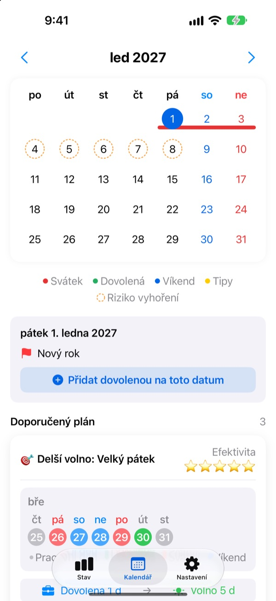
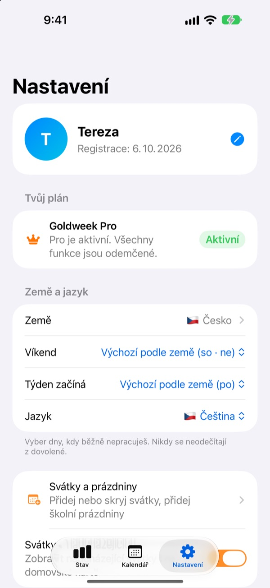

Málo dní dovolené,
dlouhé volno
Goldweek spojí svátky s víkendy a přesně ukáže, které dny si vzít dovolenou, abys měl volno co nejdéle. Konec listování kalendářem a počítání.
Stažení zdarma. Přehled dovolené i návrhy zůstávají zdarma.

Kam až dosáhne tvoje dovolená?
Vyber, kolik dní dovolené si můžeš vzít. Uvidíš nejdelší volno, které dají kolem nejbližších svátků.
Už tě nebaví počítat dny v kalendáři?
Ve čtvrtek je svátek, vzít si pátek? Nebo si den nechat na prodloužený víkend příští měsíc? Po dostatečném listování si nakonec vezmeš volno jen tak nějak a v prosinci ti zbylá dovolená propadne. Goldweek počítá za tebe a ukáže dny, se kterými dovolená vydrží nejdéle.
Dovolená na jeden pohled
Celkem, vyčerpáno a zbývá na jedné obrazovce. Vedle vidíš, kolik roku už uběhlo a kolik dovolené jsi vyčerpal, takže hned poznáš, jestli si jí nešetříš moc.
Zbývající dny a nejbližší volno ukazuje widget na ploše.

Volno rovnou v kalendáři
Svátky, dovolená a navržené dny mostu jsou v kalendáři barevně. Klepnutím na datum přidáš nebo upravíš volno, i půlden, čtvrt dne nebo hodiny.
Starší dovolenou naráz převezmeš z fotky obrazovky personálního systému.

Tvoje země, tvoje pracovní doba
Svátky 42 zemí, od Česka přes zbytek Evropy po Asii a Ameriku. Kde se svátky liší podle regionu, vybereš ten svůj. Tvoje země chybí? Přidej si vlastní svátky.
Nastavíš i víkendové dny, první den v týdnu a zda pracuješ na pevný úvazek, částečný úvazek nebo na směny.

Začni ve třech krocích
- 1
Řekni, kde pracuješ
Při prvním spuštění vyber zemi a kolik dní dovolené máš za rok.
- 2
Vyber návrh
Na kartě Kalendář najdeš navržené volno. Přidej, co se ti líbí.
- 3
Zapisuj dovolenou
Klepni na datum, nebo převezmi starší dovolenou z fotky.
Jak se počítá
- Celý den
- 1 den ze zůstatku
- Půlden
- 0,5 dne
- Čtvrt dne
- 0,25 dne
- Hodiny
- Podle tvé pracovní doby v ten den
- Nemoc, překážky v práci, služební cesta
- Neodečítají se z dovolené
- Bonusová dovolená
- Volno navíc, třeba náhradní volno, vedené zvlášť s datem platnosti (Pro)
Počet dní dovolené za rok a měsíc, kdy začíná tvůj dovolenkový rok, změníš kdykoli v Nastavení.
Dobrý odpočinek je zdarma. Plánování zařídí Plus a Pro.
Zdarma
- Celé dny, půldny, čtvrtdny a hodiny se zbývající dovolenou
- Svátky 42 zemí, vlastní svátky a prázdniny
- Všechny návrhy na letošek, až 3 do plánu
- Tipy na odstupy mezi odpočinkem, připomínky a widget
- Přidání dovolené z fotky
- Záloha na iCloud a plán sdílený s rodinou
Plus a Pro
- Plus: Optimální roční plánovač
- Plus: Neomezené návrhy, i na loňský a příští rok
- Plus: Odeslání volna do aplikace Kalendář
- Pro: Vše z Plus, bonusová dovolená, roční limity a převody podle druhu
- Pro: Import školního kalendáře a automatické rozpoznání kalendáře
- Pro: Volno spolu a rodinná výročí
Každá úroveň je jako roční předplatné nebo jednorázový nákup navždy.
Roční předplatné se automaticky obnoví, pokud ho nezrušíš nejpozději 24 hodin před koncem období. Spravovat ho můžeš kdykoli v Nastavení > Účet Apple > Předplatná.
Časté otázky
Zůstatek dovolené nesedí.
Zkontroluj v Nastavení, ve kterém měsíci začíná tvůj dovolenkový rok a kolik dní dovolené máš celkem. Půldny (0,5) a čtvrtdny (0,25) se odečítají automaticky a druhy, které se nepočítají, jako nemoc, překážky v práci nebo služební cesty, zůstatek nemění. Pokud to pořád nesedí, napiš nám.
Dovolená se nezobrazuje v kalendáři.
Zrušená dovolená se v kalendáři nezobrazuje. Zkontroluj stav záznamu ve Správě dovolené. Pomoct může i aktualizace na nejnovější verzi.
Jak přidám bonusovou dovolenou?
Klepnutím na + na kartě Stav otevři Správu dovolené a dole použij část Bonusová dovolená. Vyber druh (náhradní volno, odměna, volno na zotavenou…), počet dní a případně datum platnosti. Bonusová dovolená se vede zvlášť od běžné dovolené.
Zaplatil jsem, ale nic se neodemklo.
Klepni dole na kartě Nastavení na Obnovit nákup. Nákup se obnoví s účtem Apple, kterým jsi přihlášený v App Storu. Když to nepomůže, napiš nám.
Přijdu o data, když aplikaci smažu?
Data jsou uložená v zařízení, takže smazáním aplikace zmizí. Zapni zálohu na iCloud, ať máš kopii, kterou můžeš později obnovit.
Můžu přidat vlastní svátky nebo některé skrýt?
Ano. V části Svátky a prázdniny v Nastavení přidáš vlastní svátky nebo skryješ výchozí.
Které země jsou podporované?
Goldweek zná svátky 42 zemí. Vyber zemi v Nastavení (a region, kde se svátky liší) a kalendář se hned upraví. Pokud tvoje země chybí, přidej svátky sám nebo o ni požádej přes zpětnou vazbu v aplikaci.
Kde jsou uložená moje data?
Co zadáš, zůstává v tvém zařízení nebo v tvém vlastním iCloudu. Dostáváme jen anonymní statistiky používání, anonymní hlášení pádů a zpětnou vazbu, kterou se sám rozhodneš poslat.
Se vším, na co výše není odpověď, s nápady nebo chybami piš na leeo@kakao.com. Obvykle odpovídáme do jednoho až dvou pracovních dnů.